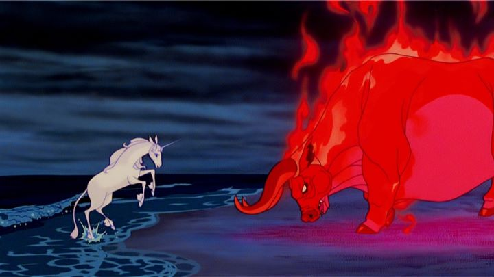

Rankin and Bass productions are well-known for their work with those old stop-motion holiday films. You know, "Rudolph," "Frosty," "Santa Claus is coming to Town,' etc. But they also made a handful of hand-drawn films with more fantastical elements, one of their most original being "The Last Unicorn," based off of a fantasy novel. And while it seems like a cheap girly film from a distance, it's actually a much better fantasy film then you might think. At the beginning, two wandering hunters pass by a beautiful forest, which they believe must be guarded by the last of the unicorns. The unicorn hears them, but not wanting to believe she is the last, the journeys out into to world to find what has happened to the others. She gains a small party of friends as she goes, and becomes the first unicorn to experience love and regret. The story is actually better than you'd think, and unless you read the book, very original. It's characters and dialogue are on par with "The Princess Bride," using the right amount of humor and truth. It's a shame that the second half is mostly spent at one location, where they appear lost and not sure how to proceed. It's here that the unicorn, once so wise and elegant, becomes forgetful and almost lazy. This is the point that she learns about love and other human thoughts. I don't want to give much away, but while this does make sense to the context of the story, it feels boring and too long, and almost ruins the film's otherwise incredibly strong start. And the ending is somewhat bittersweet, making me wish the entire second half was rewritten. At least it looks good. I was amazed how good this old movie looked on Bluray, much better than their other films looked on vhs. Environments look detailed, and characters look crisp. The English dub and songs by America are also better than expected, and enjoyable.  It's easy to pass this movie by in the video store, but it's also easy to get for an affordable price. There's a reason "The Last Unicorn" still gets re-releases to this day, and why it has a small cult following. Give it a chance, you might be impressed.
- "Ani" More reviews can be found at : https://2danicritic.github.io/ Previous review: review_The_Land_Before_Time Next review: review_The_Legend_of_Hei